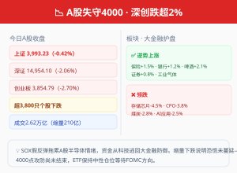

01
A股
沪指失守4000收3993 · 深创跌超2% · 大金融逆势护盘
A股今日三大指数集体低开后震荡下行。上证收报3993.23点（-0.42%），失守4000点整数关口；深证成指收14,954.10（-2.06%）；创业板指收3,854.79（-2.70%）；科创50跌0.65%。全市场1556只上涨、3878只下跌，超3800只个股飘绿。（来源：新浪财经、东方财富）
成交额方面，两市合计成交2.62万亿元，较昨日缩量约210亿元。资金在大幅收缩。
逆势上涨板块：银行（+1.2%）、保险（+1.5%）、证券（+0.8%）、工业气体、啤酒（世界杯概念）。大金融成为资金的"避风港"——中农工建四大行悉数收涨，招商银行涨1.8%。
领跌板块：存储芯片（-4.5%）、CPO概念（-3.8%）、超导（-3.5%）、煤炭（-2.8%）、AI应用。昨日涨停潮的半导体板块今日全线回调——隔夜SOX假反弹的情绪传染效应仍在延续。
茅台今日公告拟以不超过2000元/股回购注销，金额上限60亿元。但市场反响寥寥，茅台仅微涨0.3%——在4000点失守的大背景下，单个公司的回购难以扭转市场情绪。
🧩 传导链
隔夜SOX假反弹（+5.6%→收跌约-5%）→ A股半导体情绪反转 → 昨日涨停潮个股集体回调 → 上证重回4000以下 → 大金融护盘但独木难支 → CPI数据公布后市场关注今夜美股方向
📌 投资视角
短期：4000点攻防战仍在持续。今日缩量下跌（2.62万亿）说明恐慌尚未蔓延——如果放量暴跌才是真正危险信号。CPI数据公布后，市场焦点转向今夜美股和下周三FOMC。建议在4000点区间保持中性仓位，不要左侧抄底也不要恐慌抛售。
关注：半导体板块是否企稳（SOX期货是先行指标），大盘金融股能否延续护盘。
